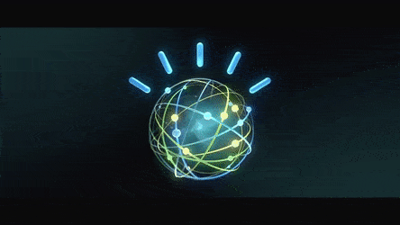

Wildfire Smoke Detector
Developed an object detection model using Tensorflow to detect California wildfires from real-time cameras. Optimized model performance using hyperparameter tuning to reduce false positives such as clouds faking our eyes as potential smoke. Performed model inference on new test images achieving an accuracy over 92%.
View on Github
Arvato Customer Segmentation
Applied unsupervised learning techniques on demographic and spending data for a sample of German households. Preprocessed the data, used dimensionality reduction techniques, and implemented clustering algorithms to segment customers with the goal of optimizing customer outreach for a mail order company.
View on Github

Customer Loan Creditworthiness
Built a binary classification model which will predict two outcomes: whether a customer is creditworthy or not. Cleaned dataset using Alteryx resolving data issues and removed variables having low variability to avoid skewness of data. Compared Logistic Regression, Decision Tree, Random Forest and Boosted Model to select the most accurate model.
View on Github
Disaster Response System
Utilized Python libraries (scikit learn, pandas, numpy) to build a Natural Language Processing (NLP) model from a dataset containing pre-labelled tweets and messages from real life disaster events. Developed an ML pipeline to train and categorize the events into 36 different disaster categories and genres
View on Github
Forecasting Fresh Produce Sales
Used K-Means Clustering to segment stores in order to match local demand. Then, developed a model to predict the segment of 10 newly opened stores based on demographic data. Finally, forecasted the fresh produce sales of both existing and new stores using an ETS/ARIMA model
View on Github

IBM Recommendation System
Analyzed the interactions that users have with articles on the IBM Watson Studio platform, and made recommendations to them. Preprocessed the data in Python using pandas and performed recommendation based on popularity, user-item interactions and predicted using matrix decomposition.
View on Github
Dog Breed Classifier
Implemented a classifier to identify dog breeds using Convolutional Neural Networks from scratch and also using transfer learning. Compared the results of both the models. At the end of the project, we had an algorithm that predicts the closest dog breed a human face resembles. Want to know the dog breed you resemble? Click that red button below!
View on Github
Flight Delays
Applied CRISP-DM process to answer business questions using exploratory data analysis and random forest regression model to predict delays among different flights. Communicated the results to director and judges providing recommendations such as best day to fly, airlines to avoid and awareness of monopolistic flight routes.
View on Github
Face Generation
Generated faces of famous celebrities using Generative Adversarial Network (GAN). In short, a GAN consists of two Deep Neural Networks facing off against each other. One neural networks tries to replicate real data (in this case images) from noise data, and the other tries to detect which are fake or real.
In progress

IMDB Movie Review
Trained a Long short-term memory (LSTM) classifier which predicts whether a movie review is positive or negative. Created a simple web app using HTML which accessed the deployed model created by AWS Lambda and API Gateway that would take data from the user and seamlessly receive a valid output from the model.
In Progress
Charity Donor
Employed supervised learning techniques on data collected for the U.S. census to help a fictitious charity organization identify people most likely to donate to their cause. Building a training and prediction pipeline to evaluate the accuracy and efficiency/speed of three supervised ML algorithms- GaussianNB, SVC and Adaboost.
In progress
TV Script Generation
Generating my own Seinfeld TV scripts using Recurrent Neural Networks, using part of the Seinfeld dataset of scripts from 9 seasons. The Neural Network will generate a new ,"fake" TV script, based on patterns it recognizes in the training data.
In Progress